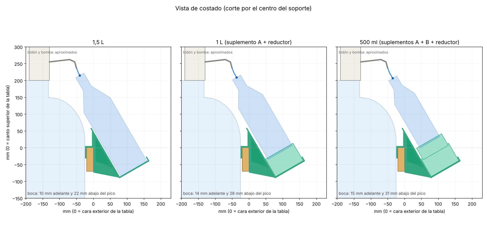

V1.1
actual 17/10/2026Se cuelga de la tabla frontal del mueble. La botella apoya en una copa y en un aro en C, inclinada 30° y con la boca pegada al pico.
- Botellas de 1,5 L, 1 L y 500 ml
- 5 piezas en PETG, cama de 220 × 220 mm
- Boca 10 mm adelante y 22 mm abajo del pico